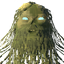
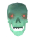

Trophies
Trophies in Valheim – 67 items with biome, source, required tool, recipe and uses.
No item found.
 Abomination Trophy
Abomination Trophy
A tangled mess of roots and bark.
How to get it
- Dropped by: Abomination · Swamp · 50 % chance
Used for
- Ingredient for: Sticky Fishing Bait
 Asksvin Trophy
Asksvin Trophy
Don't let yourself be fooled by the friendly smile, for it could easily bite your arm off.
How to get it
- Dropped by: Asksvin · Ashlands · 10 % chance
Used for
- Building material for: Feathery Wreath
 Barka Trophy
Barka Trophy
The frozen head of a once-living tree.
How to get it
- Dropped by: Barka · Deep North · 10 % chance
 Bear Trophy
Bear Trophy
That stare is still frightening...
How to get it
- Dropped by: Bear · Black Forest · 10 % chance
Used for
- Ingredient for: Bronze Pendant, Headdress of the Bear
- Building material for: Bearskin Rug
 Blob Trophy
Blob Trophy
A smelly lump of sticky matter.
How to get it
- Dropped by: Oozer · Swamp · 10 % chance
- Dropped by: Blob · Swamp · 10 % chance
Used for
- Ingredient for: Blob Bomb: Elite Poison, Blob Bomb: Poison
 Boar Trophy
Boar Trophy
This boar head would make for a nice decoration in any house.
How to get it
- Dropped by: Boar · Meadows · 15 % chance
 Bonemass Trophy
Bonemass Trophy
Bones and viscous goo, held together by some unseen force. Offer it to the Sacrificial Stones.
How to get it
- Dropped by: Bonemass · Swamp
 Bonemaw Trophy
Bonemaw Trophy
A skull made up of dense bone, as dangerous as it is protective.
How to get it
- Dropped by: Bonemaw · Ashlands · 33 % chance
 Brenna Trophy
Brenna Trophy
Still burning, somehow.
How to get it
- Dropped by: Brenna · Black Forest
 Cultist Trophy
Cultist Trophy
My, what big teeth it has...
How to get it
- Dropped by: Cultist · Mountain · 10 % chance
Used for
- Ingredient for: Fenris Hood
 Deathsquito Trophy
Deathsquito Trophy
You don't like touching this thing even when it's dead.
How to get it
- Dropped by: Deathsquito · Plains · 5 % chance
 Deer Trophy
Deer Trophy
A fine specimen, but you'll need to kill more than deer to enter Valhalla.
How to get it
- Dropped by: Deer · Meadows, Black Forest · 50 % chance
Used for
- Ingredient for: Mead Horn of Oden, Stagbreaker
- Summons the boss: Eikthyr (2 ×)
 Drake Trophy
Drake Trophy
Still cold to the touch.
How to get it
- Dropped by: Drake · Mountain · 10 % chance
Used for
- Ingredient for: Blob Bomb: Frost, Drake Helmet, Frosty Fishing Bait
 Draugr Elite Trophy
Draugr Elite Trophy
The dead stare of the glowing red eyes sends a shiver through your bones.
How to get it
- Dropped by: Draugr Elite · Meadows, Swamp · 10 % chance
- Break: Northern village · 5.3 % chance
Used for
- Ingredient for: Iron Sledge

Draugr TrophyBind up the mouth if it starts to whisper in the night...
How to get it
- Dropped by: Draugr · Meadows, Swamp · 10 % chance
 Dvergr Trophy
Dvergr Trophy
It's frankly a little troubling that you would consider hanging these on your wall...
How to get it
- Dropped by: Dvergr Mage · Mistlands · 5 % chance
- Dropped by: Dvergr Rogue · Mistlands, Ashlands · 5 % chance
- Dropped by: Imprisoned Dvergr · Deep North · 5 % chance
 Eikthyr Trophy
Eikthyr Trophy
This severed head oozes power. Offer it to the Sacrificial Stones.
How to get it
- Dropped by: Eikthyr · Meadows
 Elaking Trophy
Elaking Trophy
Mean little eyes stare back at you.
How to get it
- Dropped by: Elaking · Meadows, Black Forest, Swamp, Mountain, Plains, Mistlands, Ashlands, Deep North, Ocean · 10 % chance
 Eyeless One Trophy
Eyeless One Trophy
Getting slashed by these claws would be very unpleasant.
How to get it
- Dropped by: Eyeless One · Deep North · 10 % chance
 Fader Trophy
Fader Trophy
The green dragon, corrupted beyond redemption. Offer him to the sacrificial stones.
How to get it
- Dropped by: Fader · Ashlands
 Fallen Valkyrie Trophy
Fallen Valkyrie Trophy
Though she is dead, she yearns for the blood to flow.
How to get it
- Dropped by: Fallen Valkyrie · Ashlands · 5 % chance
Used for
- Ingredient for: Jörmundling
 Fenring Trophy
Fenring Trophy
A strange, elongated paw, its claws razor sharp.
How to get it
- Dropped by: Fenring · Mountain · 10 % chance
Used for
- Ingredient for: Cold Fishing Bait, Wolf Sight
 Fuling Berserker Trophy
Fuling Berserker Trophy
The huge grizzled head is as heavy as a boulder.
How to get it
- Dropped by: Fuling Berserker · Plains · 5 % chance
- Break: Northern village · 1.1 % chance
Used for
- Ingredient for: Evasion Mantle
 Fuling Shaman Trophy
Fuling Shaman Trophy
It shall cast no more spells against you.
How to get it
- Dropped by: Fuling Shaman · Plains · 10 % chance
- Break: Northern village · 5.3 % chance
 Fuling Trophy
Fuling Trophy
Loose folds of greenish skin gathered in around a pair of dark and hateful eyes.
How to get it
- Dropped by: Fuling · Plains · 10 % chance
Used for
- Ingredient for: Stingy Fishing Bait
 Geirrhafa Trophy
Geirrhafa Trophy
He's giving you an icy stare.
How to get it
- Dropped by: Geirrhafa · Mountain

Ghost TrophyDoes it still whisper about unfinished business?
How to get it
- Dropped by: Ghost · Black Forest · 10 % chance
 Gjall Trophy
Gjall Trophy
Hopefully it won't float away.
How to get it
- Dropped by: Gjall · Mistlands · 30 % chance
Used for
- Ingredient for: Pulsating Earrings
 Greydwarf Brute Trophy
Greydwarf Brute Trophy
It took seven blows to hack this gnarled head from its body.
How to get it
- Dropped by: Greydwarf Brute · Black Forest · 10 % chance
- Break: Northern village · 5.3 % chance
 Greydwarf Shaman Trophy
Greydwarf Shaman Trophy
It may try to come back so be sure to prune any new shoots...
How to get it
- Dropped by: Greydwarf Shaman · Black Forest, Deep North · 10 % chance
Used for
- Ingredient for: Heart of the Forest
 Greydwarf Trophy
Greydwarf Trophy
The mossy, severed head of a Greydwarf.
How to get it
- Dropped by: Greydwarf · Meadows, Black Forest, Deep North · 5 % chance
- Break: Northern village · 10 % chance
 Growth Trophy
Growth Trophy
A black and sticky mess.
How to get it
- Dropped by: Growth · Plains · 10 % chance
Used for
- Ingredient for: Blob Bomb: Tar
 Hare Trophy
Hare Trophy
These are said to bring luck. But not for their original owner.
How to get it
- Dropped by: Hare · Mistlands · 5 % chance
 Hexen Trophy
Hexen Trophy
Before her death, her eyes sparked with magic. Now they're empty and void.
How to get it
- Dropped by: Hexen · Meadows, Black Forest, Swamp, Mountain, Plains, Mistlands, Ashlands, Deep North, Ocean · 10 % chance
Used for
- Ingredient for: Cast: Northern Vengeance, Northern Vengeance, Witch Crown
 Krigen Trophy
Krigen Trophy
Once a mighty warrior, now nought but a husk remains.
How to get it
- Dropped by: Krigen · Meadows, Black Forest, Swamp, Mountain, Plains, Mistlands, Ashlands, Deep North, Ocean · 10 % chance
 Kvastur
Kvastur
A witch's best friend.
How to get it
- Dropped by: Kvastur · Swamp
 Lava Blob Trophy
Lava Blob Trophy
It's probably dead, right?
How to get it
- Dropped by: Lava Blob · Ashlands · 10 % chance
 Leech Trophy
Leech Trophy
Although slimy, the skin is beautifully patterned in red and black.
How to get it
- Dropped by: Leech · Swamp · 10 % chance
Used for
- Ingredient for: Iron Brooch
 Lox Trophy
Lox Trophy
A giant beast's head, thatched with thick fur.
How to get it
- Dropped by: Lox · Plains · 10 % chance
Used for
- Ingredient for: Bracelets of the Brave, Misty Fishing Bait
 Marksman Trophy
Marksman Trophy
These legs could hold infinite power.
How to get it
- Dropped by: Charred Marksman · Ashlands · 5 % chance
 Moder Trophy
Moder Trophy
The head of a dragon, majestic even in the rigor of death. Offer it to the Sacrificial Stones.
How to get it
- Dropped by: Moder · Mountain
 Moose Trophy
Moose Trophy
The mighty ruler of the northern forests.
How to get it
- Dropped by: Moose · Deep North · 10 % chance
Used for
- Ingredient for: Cast: Headdress of the Caller, Cast: Spirit Caller, Headdress of the Caller, Neckstabber, Spirit Caller
- Building material for: Antler Throne
 Morgen Trophy
Morgen Trophy
The waking nightmare has met its end.
How to get it
- Dropped by: Morgen · Ashlands · 5 % chance
Used for
- Ingredient for: Brimstone
 Neck Trophy
Neck Trophy
The beady eyes and razor sharp teeth belie the ostensibly calm nature of this small lizard.
How to get it
- Dropped by: Neck · Meadows · 5 % chance
 Pulp Trophy
Pulp Trophy
Remains of unfortunate adventurers, digested and jellified over time.
How to get it
- Dropped by: Shapeless Pulp · Deep North · 10 % chance
Used for
- Ingredient for: Blob Bomb: Pulp
 Rancid Remains Trophy
Rancid Remains Trophy
A rank and rotten skull. You're not sure why you kept it...
How to get it
- Dropped by: Rancid Remains · Black Forest · 10 % chance
 Seal Trophy
Seal Trophy
This animal never did any harm, yet it met an untimely end.
How to get it
- Dropped by: Seal · Deep North · 10 % chance
 Seeker Soldier Trophy
Seeker Soldier Trophy
The head of a fallen champion.
How to get it
- Dropped by: Seeker Soldier · Mistlands · 5 % chance
- Break: Northern village · 5.3 % chance
 Seeker Trophy
Seeker Trophy
Less delicate than they look. The leather of the wings catches the firelight as if remembering flight.
How to get it
- Dropped by: Seeker · Mistlands · 5 % chance
Used for
- Ingredient for: Resounding Shackle
 Serpent Trophy
Serpent Trophy
The scales have dulled but the eyes are still bright.
How to get it
- Dropped by: Serpent · Ocean · 33 % chance
Used for
- Ingredient for: Fins of Destiny, Heavy Fishing Bait
 Skeleton Trophy
Skeleton Trophy
The expressionless grin of this skull reminds you of the inevitability of death.
How to get it
- Dropped by: Skeleton · Meadows, Black Forest, Swamp, Mountain, Plains, Deep North · 10 % chance
Used for
- Ingredient for: Bone Tower Shield, Dead Raiser
- Building material for: Unfading Candles
 Stone Golem Trophy
Stone Golem Trophy
This crystalline rock formation would make for an impressive floor decoration.
How to get it
- Dropped by: Stone Golem · Mountain · 5 % chance
Used for
- Ingredient for: Crystal Heart
 Surtling Trophy
Surtling Trophy
Wreathed in pale flame, it still smoulders like an ember.
How to get it
- Dropped by: Surtling · Swamp · 5 % chance
Used for
- Ingredient for: Nimble Anklet
 The Elder Trophy
The Elder Trophy
This severed head oozes power. Offer it to the Sacrificial Stones.
How to get it
- Dropped by: The Elder · Black Forest
 The Queen Trophy
The Queen Trophy
She has seen enough. Offer it to the Sacrificial Stones.
How to get it
- Dropped by: The Queen · Mistlands
 Thungr Trophy
Thungr Trophy
Not so tough now.
How to get it
- Dropped by: Zil & Thungr · Plains
 Tick Trophy
Tick Trophy
It's a conversation piece...
How to get it
- Dropped by: Tick · Mistlands · 5 % chance
 Troll Trophy
Troll Trophy
The leathery skin bears the faded tracery of ancient symbols.
How to get it
- Dropped by: Troll · Black Forest · 50 % chance
Used for
- Ingredient for: Mossy Fishing Bait, Trollstav
 Ulv Trophy
Ulv Trophy
A rugged tail from a not so good boy.
How to get it
- Dropped by: Ulv · Mountain · 10 % chance
 Vile Trophy
Vile Trophy
These eyes are finally vacant for good.
How to get it
- Dropped by: Vile · Plains · 10 % chance
Used for
- Ingredient for: Vilebone Visage
 Volture Trophy
Volture Trophy
It's like a vulture, but it thrives in volcanic climates.
How to get it
- Dropped by: Volture · Ashlands · 10 % chance
 Warlock Trophy
Warlock Trophy
A warm glow seems to almost emanate from within. Handle with care.
How to get it
- Dropped by: Charred Warlock · Ashlands · 5 % chance
 Warrior Trophy
Warrior Trophy
Fractures line this skull, as if it has taken many hits over the years.
How to get it
- Dropped by: Charred Warrior · Ashlands · 5 % chance
Used for
- Ingredient for: Hot Fishing Bait
- Building material for: Grausten Chest
 Wolf Trophy
Wolf Trophy
Frozen in death, the hair matted with blood and a silent howl lodged in its throat.
How to get it
- Dropped by: Wolf · Mountain · 10 % chance
Used for
- Ingredient for: Wolf Fur Cape
- Building material for: Rustic Drawbridge
 Wraith Trophy
Wraith Trophy
The shed skin of a wraith, a flowing robe only visible by moonlight.
How to get it
- Dropped by: Wraith · Swamp · 5 % chance
 Writhan Trophy
Writhan Trophy
Tough dead, it should probably be handled delicately.
How to get it
- Dropped by: Writhan · Swamp · 10 % chance
 Yagluth Trophy
Yagluth Trophy
The crownless head of a dead king. Offer it to the Sacrificial Stones.
How to get it
- Dropped by: Yagluth · Plains